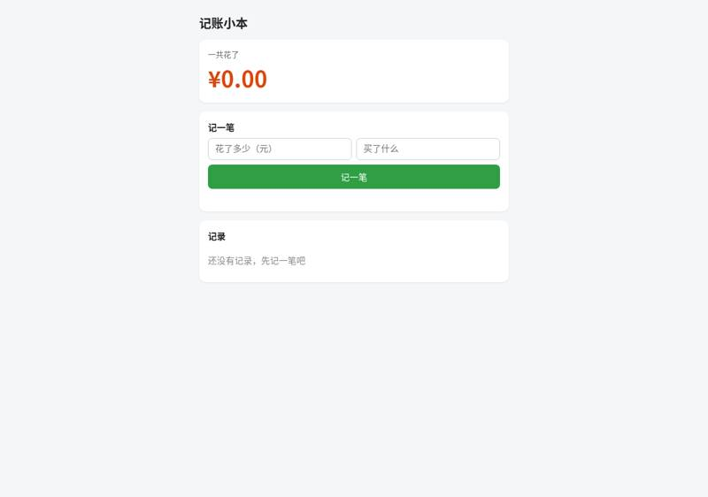
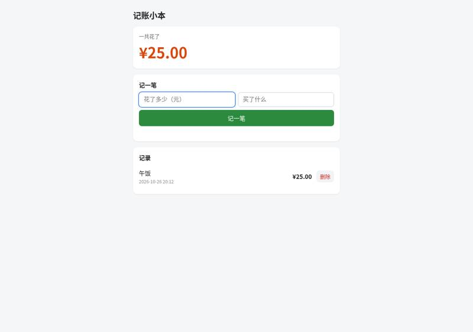
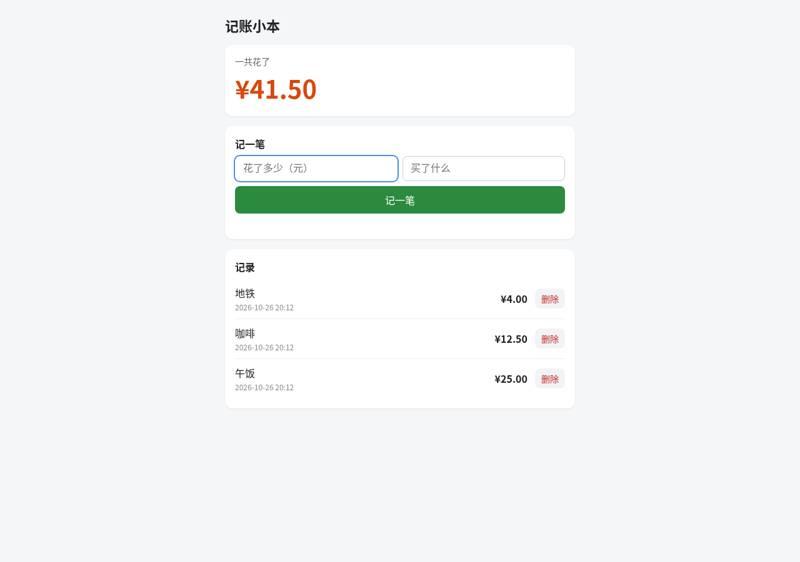
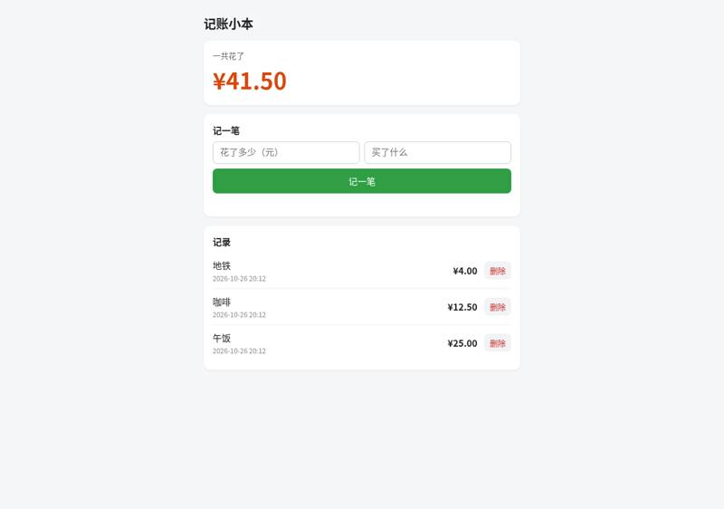
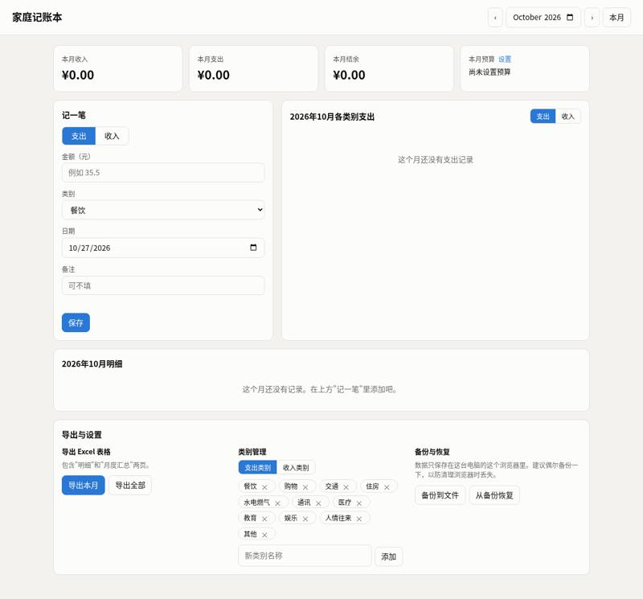
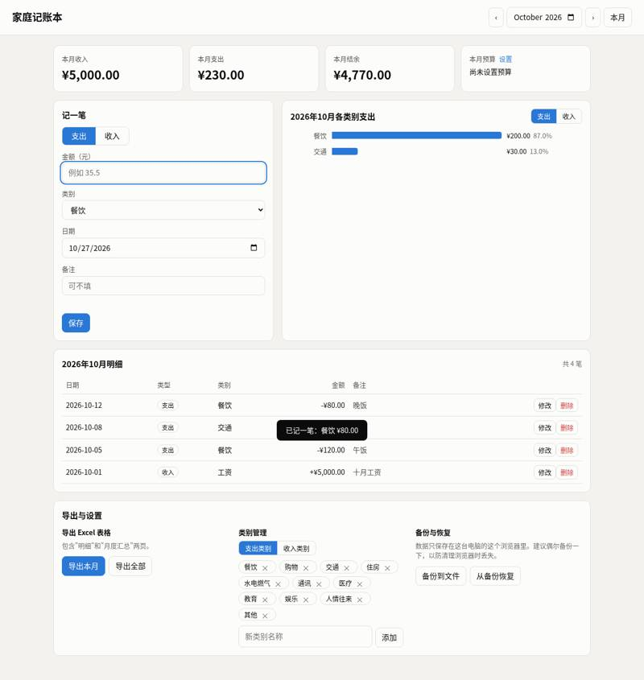
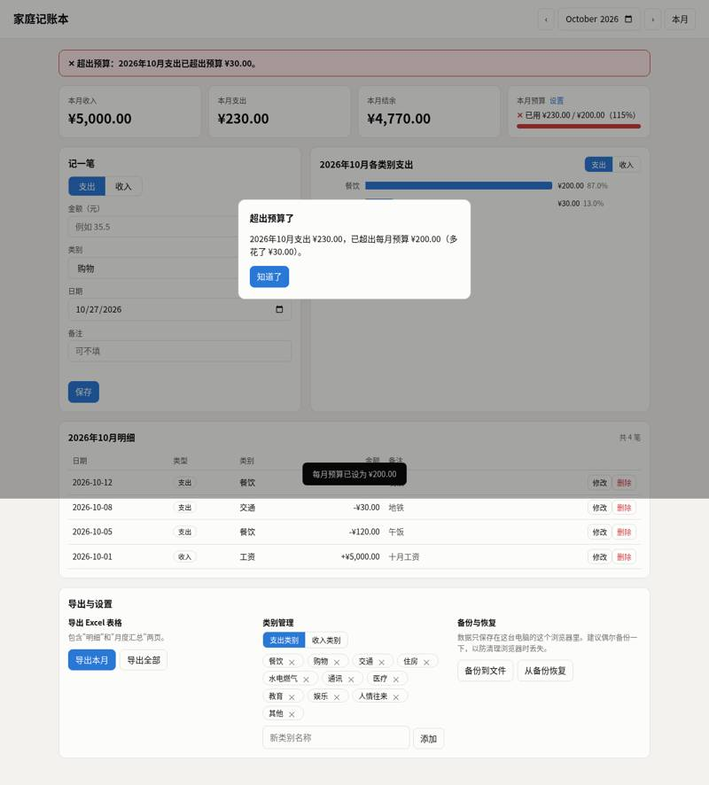
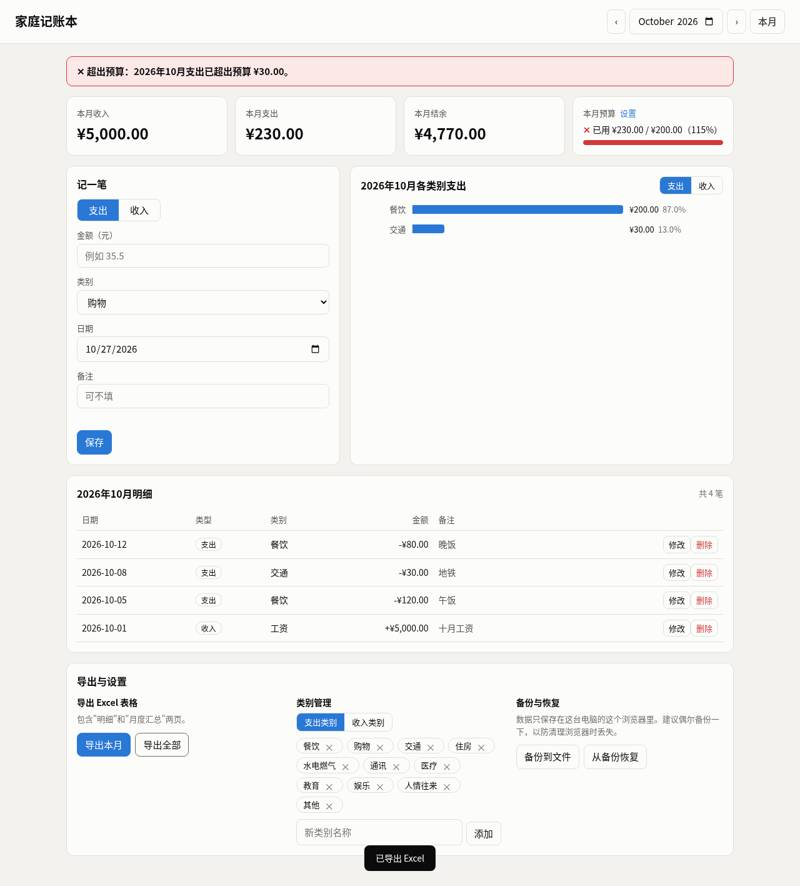
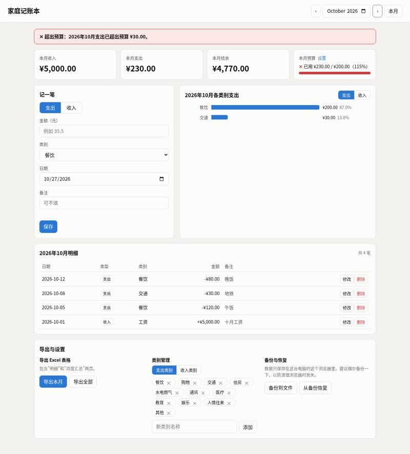

botingw/rulebook-ai: vibe coding test
Installed from its README in a throwaway sandbox, then used by Claude Code (Claude Opus 5.5) to build two apps from requests written the way someone who cannot code would write them. Whenever the build stopped to ask a question or for approval, it got the same reply. A separate tester session, with no tool loaded, opened each app in a browser and ran the checks; we went through every screenshot. All results · The task · The tester's checks
Install: SETUP: done installed uv (`curl -fsSL https://astral.sh/uv/install.sh | bash`), installed rulebook-ai 0.2.1 from the local repo (`uv tool install ~/src`), then in ~/work ran `rulebook-ai packs add light-spec` and `rulebook-ai project sync --assistant claude-code`, which generated CLAUDE.md, memory/, tools/ and .rulebook-ai/ (repo commit 7bc8531cdaaa)
One sentence: an expense page
The request, word for word: 帮我做一个记账小网页：每次花钱记一笔（花了多少、买了什么），页面上能看到一共花了多少，关掉浏览器再打开，记录还在。
Ran: all 4 checks passed. Opens: double-click. Built in 2.0 minutes (limit 30); it stopped to ask 1 time(s); how it ended: finished. Usage at API prices: $0.55 (3.2 times the run with no tool). Packages: none (plain HTML, CSS and JavaScript).
| Check | Verdict | What the tester saw | Screenshot |
|---|---|---|---|
| opens | pass | file:// page shows: '记账小本\n一共花了\n¥0.00\n记一笔\n记一笔\n\n记录\n还没有记录，先记一笔吧' |  |
| records an expense | pass | list after adding: '午饭\n2026-10-26 20:12\n¥25.00\n删除'; total ¥25.00 |  |
| total is right | pass | total shown: ¥41.50; list: '地铁\n2026-10-26 20:12\n¥4.00\n删除\n咖啡\n2026-10-26 20:12\n¥12.50\n删除\n午饭\n2026-10-26 20:12\n¥25.00\n删除' |  |
| still there after closing and reopening | pass | after reopen total: ¥41.50; list: '地铁\n2026-10-26 20:12\n¥4.00\n删除\n咖啡\n2026-10-26 20:12\n¥12.50\n删除\n午饭\n2026-10-26 20:12\n¥25.00\n删除' |  |


Where it stopped, and got the reply 「我不懂这些，你按你推荐的来，继续做。」
这个工具（rulebook-ai，"light-spec" 规则包）已经在 ~/work 里装好了。它的流程要求先把需求问清楚，再给出方案，等你同意后才开始写代码。所以我先停在这里，等你回答。 --- ## 方案草稿（等你确认） **你要的东西：** 一个记账网页。每次花钱记一笔，写上花了多少、买了什么。页面上显示一共花了多少。关掉浏览器再打开，记录还在。 **打算这样做：** - 只有一个文件 `~/work/output/index.html`，双击就能在浏览器里打开。不用联网，不用装任何软件，也不用注册账号。 - 记录保存在浏览器自己的存储里，所以关掉浏览器再打开，记录还在。 - 页面分三块： 1. **记一笔**：一个"金额"输入框，一个"买了什么"输入框，一个"记一笔"按钮。 2. **一共花了**：一个醒目的大数字，每记一笔就自动更新。 3. **记录列表**：新记的排在最上面，每条显示时间、买了什么和金额。 - 如果金额没填、不是数字或者小于等于 0，就不让保存，并提示你改一下。 - 界面用中文，手机和电脑上都能看。 **有两点限制要你知道：** - 记录只存在你现在用的这台电脑的这个浏览器里。换个浏览器或换台电脑就看不到。 - 如果你清除了浏览器数据，记录也会被清掉。 --- ## 几个问题 1. **删除记录：** 记错了要能删掉某一条吗？（我建议加上，删除前会先问你一句，避免误点） 2. **货币：** 金额前面显示"¥"（人民币）可以吗？ 3. **日期：** 每条记录要不要自动记下当时的日期和时间？（我建议要） 4. **其他：** 还要不要别的功能，比如"今天花了多少"或"本月花了多少"？如果不要，我就只做你说的这几样，越简单越好。 **最后：这个方案可以吗？** 你回答上面的问题并说"可以"之后，我会把需求和计划写进项目的记录文件里，然后开始做。
One paragraph: a family ledger
The request, word for word: 做一个家庭记账本网页：能记收入和支出（金额、类别、日期、备注），能按月看收入、支出和结余，能看每个类别花了多少（最好有图），可以设每月预算、超了要提醒，还能把记录导出成 Excel 表格。数据存在我电脑上就行。
Ran: all 8 checks passed. Opens: double-click. Built in 5.8 minutes (limit 45); it stopped to ask 1 time(s); how it ended: finished. Usage at API prices: $1.46 (1.4 times the run with no tool). Packages: none (plain HTML, CSS and JavaScript).
| Check | Verdict | What the tester saw | Screenshot |
|---|---|---|---|
| opens | pass | file:// page shows title 家庭记账本, 本月收入/支出/结余 cards, 记一笔 form |  |
| records income and expenses | pass | 明细: 2026年10月明细 | 共 4 笔 | 日期 类型 类别 金额 备注 | 2026-10-12 支出 餐饮 -¥80.00 晚饭 修改删除 | 2026-10-08 支出 交通 -¥30.00 地铁 修改删除 | 2026-10-05 支出 餐饮 -¥120.00 午饭 修改删除 | 2026-10-01 收入 工资 +¥5,000.00 十月工资 修改删除 | |  |
| month's income, spending and balance | pass | October cards: 收入 5000.0, 支出 230.0, 结余 4770.0 | |
| spending by category | pass | category section: 各类别支出 | 支出 | 收入 | 餐饮 | ¥200.0087.0% | 交通 | ¥30.0013.0% | 2026年10月 (horizontal bar chart with amounts and percentages written beside each bar) |  |
| switches between months | pass | after saving the 9/15 record the app jumped by itself to 2026-09; September view: month 2026-09, cards 收入/支出/结余 (0.0, 999.0, -999.0), 999 listed in 明细: True; after › to 2026-10: cards (5000.0, 230.0, 4770.0) | |
| warns over budget | pass | budget area: 本月预算 设置 | ✕ 已用 ¥230.00 / ¥200.00（115%）; open dialog: ['超出预算了\n\n2026年10月支出 ¥230.00，已超出每月预算 ¥200.00（多花了 ¥30.00）。\n\n知道了']. Also a red banner at the top: '✕ 超出预算：2026年10月支出已超出预算 ¥30.00。' and the budget bar turns red. |  |
| exports a spreadsheet | pass | Clicked 导出全部 → downloaded 家庭记账本_全部.xlsx (a real .xlsx file, not CSV). Sheet 明细 has 5 rows: 2026-09-15 支出 购物 999; 2026-10-01 收入 工资 5000 十月工资; 2026-10-05 支出 餐饮 120 午饭; 2026-10-08 支出 交通 30 地铁; 2026-10-12 支出 餐饮 80 晚饭. Sheet 月度汇总: 2026-09 0/999/-999, 2026-10 5000/230/4770, 合计 5000/1229/3771. |  |
| still there after closing and reopening | pass | after restart October cards (5000.0, 230.0, 4770.0); Oct 明细 has 5000/120/30/80: True; Sept 明细 has 999: True |  |


Where it stopped, and got the reply 「我不懂这些，你按你推荐的来，继续做。」
我已经看完了安装好的工具。它是 **rulebook-ai**，这个项目里装的是 **light-spec** 规则包。这个工具不需要额外的付费密钥或账号就能用。它规定的流程是：先把需求问清楚，再出方案，**方案要您确认后才开始写代码**。所以我先停在这里，有几个问题请您回答，同时附上我建议的做法请您审核。 ## 一、需要您确认的问题 1. **类别**：我先预设这些，可以吗？要不要增减？ - 支出：餐饮、购物、交通、住房、水电燃气、通讯、医疗、教育、娱乐、人情往来、其他 - 收入：工资、奖金、理财、兼职、其他 - 另外，要不要让您在网页里自己添加或删除类别？ 2. **预算**：只设一个"每月总预算"就够了，还是每个类别也要能单独设？提醒是只在超出时提醒，还是用到 80% 时也先提醒一次？ 3. **使用人**：是全家共用一个账本，还是要记下每笔是谁花的（比如"爸爸 / 妈妈"）？ 4. **货币**：只用人民币（¥）可以吗？ 5. **导出 Excel**：导出全部记录，还是可以选某个月导出？要不要在表格里另加一页月度汇总？ 6. **备份**：数据只存在这台电脑的浏览器里。要不要再加"备份到文件 / 从文件恢复"的功能，防止清理浏览器时把数据丢了？ ## 二、建议方案（请审核） - **形式**：只有一个网页文件 `~/work/output/index.html`，双击就能打开，不用安装任何东西，也不用联网。 - **数据存储**：保存在您电脑上这个浏览器里（浏览器自带的本地存储），不会上传到任何地方。 - **功能**： 1. **记一笔**：选收入或支出，填金额、类别、日期（默认今天）、备注。已有记录可以修改和删除。 2. **月度总览**：选择月份后，显示当月收入、支出和结余，下面是当月的记录列表。 3. **类别统计**：用饼图显示当月各类别花了多少，并列出每类的金额和占比。 4. **预算**：设置每月预算，页面上有进度条。超出时用醒目的红色提示，并弹出提醒。 5. **导出 Excel**：生成真正的 `.xlsx` 文件，用 Excel 或 WPS 都能打开。 - **技术做法**（您不用管，只是说明）：饼图由网页自己画，不依赖网上的东西。生成 Excel 用一个现成的开源组件，我会把它直接放进 `output` 文件夹，这样断网也能用。 - **测试**：写完后我会用浏览器自动测一遍：记账、按月统计、预算提醒、导出 Excel 都要能用。 - **项目文档**：您确认方案后，我按这个工具的要求把需求、架构和任务计划写进 `memory/` 文件夹。 请回答上面 6 个问题（直接说"按默认来"也可以），并告诉我方案是否可以。您确认后我再开始做。